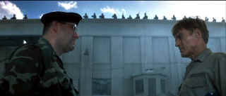

| Last Castle (SE)/ C+,B+ |
| Dreamworks/2001/133/ANA 2.35 |
A standard combination prison/military drama, The Last Castle uses typical aspects of each to frame its flimsy structure. Basically, what is the plot line here? Incarcerate a fallen general in a military prison under command of military warden with a compulsion for order bordering on Felix in The Odd Couple, and sparks will fly. There's no real social commentary often associated with prison dramas. Is this simply a personal war between two men? Is General Irwin using his fellow prisoners to further his own self-esteem? Is he seeking some sort of redemption for what seems to have been an admitted blunder in the field? The Last Castle may strain for originality, but it's a by-the-numbers treatment with a flavoring added to only make it seems.
 |
|
Face-off. ©Dreamworks |
Antagonism between the warden and the general begins in a patently
manipulative manner without concern for the reality of the situation. It
fails to set up Irwin as a sympathetic or charismatic character even makes
him uncharacteristically sloppy. Details are always important. Do you think a bulldozer is standard
equipment at a prison? How do you hide a large structure from the
guards? Do they think the prisoners are into sculpture?
There's even a touch of Cool Hand Luke. It's not how many eggs can you eat
but how many rocks can you move. It's transparently obvious that Irwin
will have to come to the defense of the weak.
Redford is, I suppose appropriately, very cold in
the role of Three-Star-General Eugene Irwin. It's not a likeable or
sympathetic portrait. James Gandolfini, on the other hand, develops
an interesting adversary; in a few acting strokes he
captures several layers of the character. You can detect something left of
normal in Colonel Winter's prison warden.
A Jerry Goldsmith score tries to extract more emotion
than the screen can match. Cinematography by Shelly Johnson is excellent
and the overall production is first rate. But director Rod Lurie has no
answer for the run-of-the-mill script.
It's a very cinematic looking transfer. There's no particular excess of
grain. It's clean, not surprising for a new film. Shadow detail is good.
Edginess is kept to a minimum except for some high peak transition
ringing. It's sharp and bright enough to catch all the sweat in Redford's
topless scene. Night sequences have proper gloss and reflection. There's some Venetian blind artifacting in Winter's office. The
cool palette delivers accurately icy color. The DTS surround encoding
shows off the music very well and when the stones are flying there's
plenty of directional whoosh.
Dreamworks delivers The Last Castle as a
special edition featuring a likable commentary from director Rod Lurie.
It's anecdotal and informed. Lurie is open and generous. He's very relaxed
and comfortable making for easy listening. Several deleted scenes are
available with or without director's commentary. A standard HBO making of
special is also included.
Reviewed on a Sharp 9000VX DLP Projector

The Movie Poster Archive includes extensive poster images from the films of stars like Susan Hayward, Kirk Douglas, Katharine Hepburn and many more. Our featured star is Tyrone Power.

A film of extraordinary power that pulls no punches, The Grifters is not
to be missed. Hungry characters on the con, the short con, the long con,
the self con.

The major studio vaults are filled with incredible film treasures which
few have seen the light of DVD.
Open the Vaults

Selections from the Feature
Archive include articles on Akira Kurosawa, Blonde Bimbos, Frank Darabont, Steven Culp, John Herzfeld or Vietnam: The Hollywood Pariah, and many
more....
Hitchcock on DVD

Information and review links to Alfred Hitchcock on DVD

 Have you visited
Home Theater
Talk lately? One of the friendliest places on the Net for Home
Theater and DVD discussion, you can get help for installation problems or
simply share your opinions with other Vidiots.
Have you visited
Home Theater
Talk lately? One of the friendliest places on the Net for Home
Theater and DVD discussion, you can get help for installation problems or
simply share your opinions with other Vidiots.

ISF Monitor
Calibrations in the Tristate New York area. Lots of hardware
info and frequent hardware peaks from video expert Kevin Miller. They may
be judgmental, but that's the point, isn't it. Lots of DVD reviews plus
news and more.